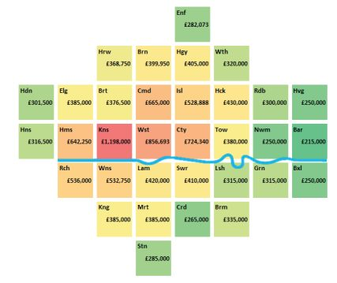
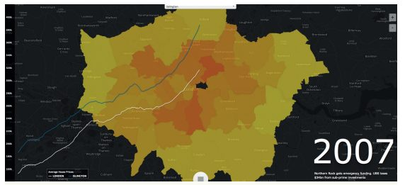
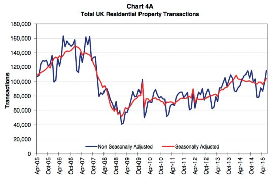

ثبت اراضی HM انتشار مرحلهای داده خود را در معاملات املاک در مارس ۲۰۱۲ آغاز کرد و تا نوامبر ۲۰۱۳ کل رکورد تاریخی مربوط به سال ۱۹۹۵ منتشر شد. این دادهها شفافیت بسیار موردنیازی را در یک تجارت «مبهم» تاریخی فراهم میکنند و در حال حاضر بهطور گسترده توسط برخی از نقشآفرینان سنتی در بازار املاک مورداستفاده قرار میگیرند. علاوهبر این، فعالان جدید در زمینه پروپتک (فنآوری در حوزه املاک و اموال است که درواقع بخش کوچکی از انقلاب دیجیتال در صنعت املاک و مستغلات، هم مشتریان و هم دیدگاه آنها و جریانات و تراکنشهای ساختمانی و شهری را در برمیگیرد)، ابزارهای دیجیتالی را توسعه میدهند تا خریدوفروش ملک را از عصر حجر خارج کنند. استارتآپهای پروپتک حدود ۱.۴ میلیارد دلار در سرمایهگذاری جهانی در سال ۲۰۱۴ جذب کردند. آزمایشگاههای PI - که یک مرکز رشد برای شرکتهای نوبنیان پیشرو است - در اواخر سال ۲۰۱۴ در لندن افتتاح شد.
- ثبت اراضی HM یک صندوق تجاری است، نوعی سازمان دولتی که هزینههای خروجی خود را از پولی که برای خدمات هزینه میکند، تأمین میکند. همراه با سایر صندوقهای تجاری بریتانیا، آینده این کشور نقطه عطفی در سفر بریتانیا به سمت داده باز بوده است.
- برخلاف برخی دیگر از مجموعه دادههای مطالعه شده در این گزارش (برای مثال، TFL)، داده ثبت اراضی HM بیشترین ارزش را ارائه میکند که در آن با مجموعه دادههای اختصاصی دیگر ارجاع متقابل دارد.
- انتشار دادههای هزینه تمامشده بهعنوان داده باز تأثیر مثبتی بر کیفیت دادهها داشته است. ثبت اراضی HM افزایش در تعداد اخطارها در مورد دادههای نادرست توسط اعضای عمومی از زمان انتشار داده هزینه تمامشده را گزارش میدهد.
- ثبت اراضی HM یک نامزد بالقوه برای خصوصیسازی است. دولت زمانی که پرونده نشانی کد پستی را در کنار پست سلطنتی خصوصیسازی کرد، یک سابقه ضعیف ایجاد کرد (صفحه ۱۲ را ببینید). فروش داده ثبت اراضی HM احتمالاً منجر به کند شدن اثرات مثبت توصیفشده در این مورد میشود: شفافیت بازار و نوآوری پروپتک.
مورد در اعداد
تعداد تراکنشهایی که توسط مجموعه داده هزینه تمامشده HMLR ثبت شدهاند: ۲۰ میلیون
تعداد بارگیریهای مجموعه داده هزینه تمامشده HMLR بین ژانویه ۲۰۱۲ و مارس ۲۰۱۳: ۷۸۰۰۰
سرمایهگذاری جهانی در شرکتهای نوبنیان فنآوری پیشرفته در سال ۲۰۱۴: ۱.۴ میلیارد دلار
«ما طرفدار شماره یک سازمان ثبت اسناد و املاک هستیم. این کاری است که دولت باید برای ایجاد کسبوکارهای کارآمد انجام دهد. آنها باید دادهها را باز کنند».
آدریان بلک، مؤسس، YOUhome
پیشینه
ثبت اراضی HM (HMLR) در سال ۱۸۶۲ برای ثبت مالکیت زمین و ملک در انگلستان و ولز ایجاد شد. HM مسئول حفظ ثبت زمین است که در آن بیش از ۲۴ میلیون عنوان (مدرک مالکیت زمین و ملک) مستند شده است.
در سال ۱۹۹۳ بهعنوان یک صندوق تجاری تأسیس شد - یک نوع آژانس دولتی که (تحت قانون صندوقهای تجاری دولتی در سال ۱۹۷۳) اختیار تأمین هزینههای خروجی خود را از پولی که برای خدمات دریافت میکند، دارد. سایر سرمایههای تجاری عبارتند از شرکتهای داخل کشور، مت آفیس و بررسی مهمات (OS). رسیدهای HMLR عمدتاً ناشی از هزینههای ثبت زمین توسط افراد و سازمانها و ثبت تغییرات در عنوان زمین و املاک است.
ثبت زمین بزرگترین بانک اطلاعاتی املاک جهان است. در اوج رونق املاک بریتانیا در سال ۲۰۰۷، در هر دقیقه در انگلستان و ولز حدود ۱ میلیون پوند ارزش املاک را پردازش میکرد. بااینحال، رکود اقتصادی در بازار بریتانیا مشاهده شد. HMLR در طول سه سال تا ژانویه ۲۰۱۱، ۲۲۰ میلیون پوند ضرر کرد و مجبور شد تا هزینههای کاربران را تا ۳۰ درصد افزایش دهد. این هزینهها از آن زمان بهعنوان بخشی از استراتژی ثبت اراضی HM برای تشویق افراد بیشتر برای ثبت معاملات آنلاین کاهشیافتهاند.
مدل صندوق تجارت نقش بحثبرانگیزی را در سفر بریتانیا به داده باز ایفا کرده است، زیرا حداقل در مواردی که سازمانها توسط رسیدهای حاصل از فروش مجدد داده تأمین مالی میشوند (برای مثال OS)، دو رویکرد در تضاد هستند. درواقع، مطالعه قبلی نویسنده سفر بریتانیا به داده باز، «مقاومت قوی» را از صندوقهای تجاری و بهویژه OS، تا آینده داده حاکمیتی باز ثبت میکند:
قدرت بررسی اطلاعات، تجزیهوتحلیل دقیق هزینه - سود مدل صندوق تجارت را توصیه کرده بود، که بهطور مشترک توسط وزارت خزانهداری HM و سپس وزارت تجارت، سرمایهگذاری و اصلاح مقررات راهاندازی و در فوریه ۲۰۰۸ منتشر شد. با وجود آن مطالعه پیدا کردن بهشدت به نفع ترک مدل صندوق تجارت، و با وجود قدرت اداره اطلاعات که اصلاح را در پشت یافتههایش توصیه میکرد، مواضع در برابر آینده دادههای دولت باز ثبت کرده است.
در نوامبر ۲۰۱۰، دولت برنامههایی را برای ایجاد یک شرکت داده عمومی (PDC) برای هماهنگ کردن انتشار داده از صندوقهای تجاری که با داده و اطلاعات سروکار دارند، اعلام کرد. این طرحها نشاندهنده «سازماندهی مجدد عمدهترین صندوقهای تجاری بودند»، اما جزئیات مربوط به اینکه چه مقدار از دادههای منتشرشده توسط PDC باز خواهند بود و همچنین امکان اینکه PDC بخشی از خصوصیسازی شود را در برنداشت.
در آگوست ۲۰۱۱، دپارتمان تجارت، نوآوری و مهارتها (BIS) با عموم در مورد سیاست داده PDC مشورت کرد. در نوامبر ۲۰۱۱، صدراعظم جورج آزبورن در بیانیه پاییز خود که شامل انتشار داده از Companies House، HMLR و The Met Ofce، انتشار داده محدود از OS، و ایجاد یک گروه داده عمومی برای به اشتراک گذاشتن بهترین روش که جایگزین PDC خواهد شد. در مارس ۲۰۱۲، BIS پاسخی را منتشر کرد که شامل شرایط مرجع برای هیئت استراتژی داده بود که «بهدنبال به حداکثر رساندن ارزش داده از گروه داده عمومی برای منافع اقتصادی و اجتماعی بلندمدت، ازجمله از طریق انتشار داده رایگان بود».
در جولای ۲۰۱۴، پسازاینکه وینس کیبل، وزیر تجارت لیبرال دموکرات، مانع از اجرای این طرح شد، دولت ائتلافی بریتانیا برنامههای خود برای خصوصیسازی یا نیمهخصوصی کردن HMLR را رها کرد. بااینحال، پس از انتخابات مه ۲۰۱۵، اکثریت خصوصیسازی دولت محافظهکار ممکن است دوباره مطرح شود: صدراعظم جورج آزبورن برنامههایی را برای خصوصیسازی ۲۳ میلیارد پوند از داراییهای دولت بهعنوان تلاشی برای تقویت سرمایهگذاران عمومی و مبارزان علیه خصوصیسازی HMLR بهعنوان یکی از اهداف در نظر گرفته است.
در آوریل ۲۰۱۵، وظایف گروه داده عمومی در یک برد BIS جدید، فرهنگ دیجیتال، پلتفرمهای خدمات و هیئتمدیره داده ادغام شد و PDG برای آخرین بار ملاقات کرد.
دادهها
مجموعه داده هزینه تمامشده شامل بیش از ۲۰ میلیون تراکنش است که به سال ۱۹۹۵ برای املاک مسکونی فروختهشده برای ارزش کامل بازار بازمیگردد.
این مجموعه داده بود که صدراعظم جورج آزبورن، ثبت زمین را برای انتشار داده باز در بیانیه پاییز ۲۰۱۱ خود متعهد کرد. در مارس ۲۰۱۲، HMLR انتشار فایلهای ماهانه معاملات را آغاز کرد. ۲۰۱۳ شاهد انتشار دادههای تاریخی در دو مرحله بود: سوابق معاملات بین سالهای ۲۰۰۹ و ۲۰۱۲ در ژوئن ۲۰۱۳ منتشر شد و در نوامبر ۲۰۱۳، رکورد تاریخی کامل از ژانویه ۱۹۹۵ تا ماه جاری منتشر شد. آن سال همچنین شاهد انتشار پایگاهداده قیمتی بهعنوان دادههای مرتبط بود. در سال ۲۰۱۴، HMLR با یک تأمینکننده شخص ثالث برای ایجاد یک «کاربرد آسان»، همچنین ابزار سازنده گزارش دادهی هزینه تمامشده، کار کرد.
این دادهها تصویر کاملی از مالکیت زمین در انگلستان و ولز نیست و تنها شامل جزئیات املاک خریداریشده و فروختهشده بین ژانویه ۱۹۹۵ و حال است (به کادر صفحه ۳۲ مراجعه کنید). این قانون تحت مجوز دولت باز منتشر میشود و بهاینترتیب با تعریف باز مطابقت دارد. این روند هرماه با تراکنشهای جدیدی که ثبت شدهاند و اصلاحات مربوط به ورودیهای قدیمیتر بهروزرسانی میشود.
کیفیت و بهموقع بودن دادهها تا حدی به افرادی (صاحبان خانه و وکلای آنها) بستگی دارد که آن را با HMLR ثبت میکنند. نمونه فایل بهروزرسانی ماهانه، حدود ۲۵۰۰ ورودی را در برابر تراکنشهای بالاتر از یک سال نشان داد، که ممکن است بهعنوان اصلاحات برای تراکنشهای موجود در نظر گرفته شود. از ۷۹۰۰۰ معامله باقیمانده که بهعنوان معاملات جدید در نظر گرفته میشوند، ۳۳۴۵ (۴.۲%) بیش از شش ماه سن داشتند.
قبل از انتشار آن بهعنوان داده باز، داده هزینه تمامشده بهصورت عمده برای پرداخت به مشتریان بهعنوان بخشی از فعالیتهای تجاری HMLR در دسترس قرار میگرفت. بهاینترتیب، HMLR در سال ۲۰۰۴ به دنبال دیدگاه دفتر کمیسیونر اطلاعات (ICO) در مورد اینکه آیا داده هزینه تمامشده (شامل آدرسها) اطلاعات زندگینامهای را تشکیل میدهند یا خیر، بود و ICO نشان داده بود که اینطور نیست. HMLR پیش از انتشار آن در سال ۲۰۱۲، ارزیابی تأثیر حریم خصوصی را انجام داد و ارزیابی را مجدداً در سال ۲۰۱۳ بررسی کرد. هر دو بررسی به این نتیجه رسیدند که داده هزینه تمامشده به نظر ماهیت زندگینامهای یا شخصی ندارند. بررسی قبل از انتشار، افزایش در شرکتهایی که از دادهها برای اهداف بازاریابی مستقیم بهعنوان یک مسئله بالقوه استفاده میکردند را نشان داد؛ بررسی سال ۲۰۱۳ نشان داد که درنتیجه انتشار، هیچ افزایشی در بازاریابی مستقیم وجود نداشته است.
چه چیزی درمجموعه دادههای هزینه تمامشده ثبت زمین HM وجود دارد و چه چیزی وجود ندارد
مجموعه دادههای هزینه تمامشده اداره ثبت زمین HM، موضوع این مطالعه، زیرمجموعه اطلاعاتی است که اداره ثبت اراضی HM در مورد مالکیت زمین و ملک در انگلستان و ولز نگهداری میکند. به نظر میرسد بیش از ۲۰ میلیون معامله در نسخه فعلی مجموعه داده مربوط به ۱۱٬۷۳۸٬۴۶۵ گیرنده منحصربهفرد است. درمجموع، ثبت زمین شامل ۲۴ میلیون عنوان است.
حتی اداره ثبت زمین نیز تصویر کاملی از مالکیت زمین و ملک در انگلستان و ولز نیست، زیرا ثبت اجباری زمین و ملک تنها با نوعی معامله ملکی آغاز میشود؛ و اگرچه ثبت زمین در سال ۱۸۶۲ ایجاد شد، ثبت اجباری در سراسر انگلستان و ولز تنها در دهه ۱۹۹۰ آغاز شد. از آن زمان به بعد، اطلاع از ثبت اراضی، زمانی که زمین یا ملکی خریداری یا فروخته میشود و (اخیراً) زمانی که هرگونه رهنی از آن گرفته میشود، و یا زمانی که زمین یا ملک به ارث میرسد، اجباری شده است. برخی از زمینها و املاک برای نسلها در یک خانواده یا مالکیت سازمان باقی ماندهاند و بنابراین هرگز ثبتنشدهاند. در جولای ۲۰۱۲، اداره ثبت اراضی HM اعلام کرد که ۸۰ درصد از مساحت انگلستان و ولز اکنون ثبتشده است.
مجموعه دادههای هزینه تمامشده، زیرمجموعهای از اطلاعات مربوط به ۸۰ درصد از جرم زمینی است که سازمان ثبت اراضی HM نگه میدارد (تنها کمتر از ۵۰ درصد از عناوینی که نگه میدارد بهنوبه خود به ۸۰ درصد از جرم زمینی انگلستان و ولز مربوط میشود). مجموعه دادههای هزینه تمامشده همچنین حاوی اطلاعاتی در مورد افرادی که صاحبعنوان یا شناسه عنوان هستند نمیباشد. آدرس، پست کد، و ارزش معامله و همچنین برخی از اطلاعات اساسی در مورد ملک، ازجمله اینکه آیا یک ساخت جدید است یا خیر، در نظر گرفته میشوند. اطلاعات بیشتر ممکن است با هزینه ۳ پوند به ازای هر عنوان به دست آید.
اگرچه درک این مسئله آسان است که چرا ثبت زمین صاحبان ثبتشده همه املاک در مجموعه داده هزینه تمامشده را شامل نمیشود، اما درک برخی از دیگر موارد انحصاری مجموعه داده دشوار است. این دادهها تنها شامل معاملات املاک بین افراد است که در آن اموال به خاطر ارزش کامل بازار به فروش رفتهاند. این قانون شامل هیچ اطلاعاتی نیست (بهعنوانمثال) که اداره ثبت اراضی در مورد املاک موروثی، یا املاک متعلق به شرکتها، یا در معاملات زمین نگهداری میکند. ثبت زمین، اطلاعات کلی خود را در مورد زمین و اموال متعلق به شرکتها (بهاستثنای افراد خصوصی، شرکتهای خارجی، خیریهها و متولیان)، اما تنها برای پرداخت به مشتریان، در دسترس قرار میدهد. این پایگاه داده شامل ۳.۲ میلیون رکورد عنوان است.
در جولای ۲۰۱۵، دیوید کامرون اعلام کرد که اداره ثبت اراضی HM، بهعنوان داده باز، داده مربوط به ملک و زمین متعلق به شرکتهای بزرگ ثبتشده در خارج از کشور، ازجمله نام و آدرس مکاتبات مالک حقوقی شرکت را منتشر خواهد کرد. این کار یک سری گزارشها از مجله Private Eye با استفاده از دادههای مشابه بهدستآمده از اداره ثبت اراضی تحت قوانین آزادی اطلاعات را دنبال کرد. اطلاعات منتشرشده برای Private Eye شامل جزئیات ۹۶۴۴۱ عنوان بود.
با استفاده از این دادهها، شرکت خصوصی قادر به کشف تعدادی از داستانهای موردعلاقه عمومی بود، ازجمله دفعاتی که شرکتهای دارایی و سرمایهگذاری از وسایلنقلیه شرکتهای خارج از کشور برای مالکیت مکانهای دیدنی لندن استفاده میکنند، درنتیجه به مالیات بر درآمد سرمایه و حفظ مزایای مالیاتی دست مییابند.
یک نقشه تعاملی که دادهها را نمایش میدهد در وبسایت Private Eye موجود است. بهمنظور ساخت این نقشه، شرکت خصوصی از مجموعه داده طرحهای عنوان منتشرشده توسط اداره ثبت اراضی HM تحت طرح INSPIRE - چندضلعیهای شاخص INSPIRE ـ اتحادیه اروپا استفاده کرد. اگرچه چندضلعیهای شاخص INSPIRE توسط HMLR تحت OGL منتشر میشوند، مجموعه داده شامل مالکیت معنوی شخص ثالث است که متعلق به سازمان نقشهبرداری (OS) است. HMLR در شرایط استفاده خود بیان میکند که این به این معنی است که هرکسی که چندضلعیها را در دسترس اشخاص ثالث قرار میدهد، یا از آنها برای هر چیزی بهغیراز «استفاده شخصی، غیرتجاری یا تجاری یا غیرتجاری در سازمان خود» استفاده میکند باید «با Ordnance Survey خود برای شرایط مجوز مربوطه تماس بگیرد». کریستین اریکسون، روزنامهنگار آزاد که رهبری این پروژه را بر روی دادههای ثبت اراضی بر عهده داشت، میگوید که نه او و نه Private Eye قبل از انتشار نقشه تعاملی با سازمان نقشهبرداری تماس نگرفتهاند، با این باور که استفاده او از چندضلعیهای شاخص INSPIRE معاملات منصفانهای را تحت بخش ۳۰(۲) از قانون حق کپی و حق ثبت سال ۱۹۸۰ تشکیل میدهند.
مسیر باز کردن داده
چه کسی خواستار انتشار داده هزینه تمامشده HMLR بهعنوان داده باز شد؟ این حقیقت که HMLR یک صندوق تجاری است به این معنی است که این یک هدف کلی برای علاقهمندان به داده باز بود. در پاسخ به مشاوره PDC دولت، داده HMLR بهعنوان سومین مجموعه داده مورد درخواست «برای استفاده و استفاده مجدد» پس از داده بررسی اردنانس و اطلاعات آدرس/ کد پستی رتبهبندی شد.
لین نیکلسون، رئیس بخش محصولات و خدمات داده در HMLR، میگوید که انتشار دادهها به «یک فراخوان عمومی برای انتشار دادههای بیشتر از سوی دولت» پاسخ داد و به هیچ سازمان خاصی اشاره نکرد که خواستار انتشار دادهها، فراتر از موسسه دادههای باز، که درهرصورت تنها همزمان با اعلام اینکه مجموعه دادههای هزینه تمامشده قرار است بهعنوان داده باز در دسترس قرار گیرد، ایجاد شد.
دادههای مبتنیبر دادههای ثبت اراضی HM، ازجمله فروش املاک و قیمت خانه در حد متوسط، از سال ۲۰۱۰ بهطور متناوب در سایت data.gov.uk توسط وزارت جوامع و دولت محلی منتشرشده و به تعداد کمی برنامه کاربردی، بهویژه اپلیکیشن پارکینگ JustPark تغذیهشده است. قبل از انتشار دادههای باز، دادههای هزینه تمامشده HMLR بهصورت قابل دانلود در دسترس بود. یک پرونده تجاری برای انتشار دادهها که پیش از بیانیه پاییز صدراعظم تنظیمشده بود و در فوریه ۲۰۱۲ تحت نظارت آزادی اطلاعات منتشر شد، نشان میدهد که HMLR در سال، ۶۰۰۰۰۰ پوند درآمد از این فعالیت را جذب میکرد. به این نکته اشاره میکند که:
مشتریان موجود برای این دادهها، در اصل، شرکتهایی هستند که دادهها را در وبسایتهای خود منتشر میکنند. ثبت زمین دارای ۳۰ مشترک موجود است که کسبوکارهای مبتنیبر وبسایت هستند و ۷ شرکت دیگر که آنها را بهعنوان کاربران مشاور/ تحقیق طبقهبندی میکنند. در یک ماه معمولی، آنها درخواستهای تککاره را برای مناطق خاص و دورههای زمانی داده از گروه کوچکی از مشتریان دریافت میکنند که بیشتر آنها مقامات محلی هستند که بهطور متوسط ۵ درخواست در ماه دریافت میکنند. آنها همچنین درخواستهای ویژه نمایندگان و وکلا را، معمولاً ۱ تا ۲ ماه از هر بخش دریافت میکنند.
در طول مصاحبه، HMLR مایل به افشای هویت مشتریان پرداختکننده خود قبل از انتشار دادهها نبود. منبعی در صنعت حدس میزند که چنین مشتریانی ممکن است شامل پورتالهای دارایی (مانند Rightmove، Prime Location، و MousePrice)، نشریات تجارت به کسبوکار (مانند Hometrack) و مشاوران املاک در سراسر کشور (مانند Savilles) باشند. تلاش نویسنده برای مصاحبه با یکی از این مشتریان بالقوه (Rightaction) ناموفق بود.
همانند سند پرونده کسبوکار ادعا میکند که، در تمام صندوقهای تجاری در نظر گرفتهشده، مشتریان فعلی داده هستند که سهم قابلتوجهی از سود اولیه انتشار داده رایگان را به دست میآورند. بااینحال، هنگامیکه از لین نیکلسون، رئیس محصولات و خدمات داده در HMLR خواسته شد تا ذینفعان مخالف انتشار مجموعه داده هزینه تمامشده بهعنوان داده باز را شناسایی کند، به نگرانیهای مشتریان تجاری موجود اشاره کرد که باز کردن داده امکان رقابت بیشتر در بازار را فراهم میکند.
درواقع، پاسخ به مشاوره استراتژی داده باز دولت که توسط دفتر کابینه در سال ۲۰۱۱ مطرح شد، شامل یکی از گروههای اطلاعاتی راهنما (که مالک Mouseprice.com است) میشود.
ملاحظات لازم باید از سازمانهای بخش خصوصی که ممکن است در حال حاضر خدمات بیشتری را حول هر مجموعه دادهای که در حال حاضر یک هزینه را از فراهمکنندگان داده بخش دولتی جذب میکند و ممکن است کاندیدهایی برای تخصیص مجدد بهعنوان «داده باز» باشد، در نظر گرفته شود. بنابراین از هرگونه اثرات منفی بالقوه در بازارهای موجود جلوگیری میکند.
کاربران و نتایج
لین نیکلسون مشتاق است تأکید کند که اکنون مجموعه داده هزینه تمامشده بهصورت آشکار منتشرشده است، HMLR نمیتواند ردیابی کند که چه کسی از آن استفاده میکند:
این یک داده باز است. آن را بیرون گذاشتیم. ما یک سیستم ثبت در آنجا قرار نمیدهیم؛ بنابراین مطلقاً نمیدانیم چه کسی آن را دانلود میکند. میتوانیم تحلیلهایی در مورد آن انجام دهیم تا بگوییم چند بار دانلود شده است، اما بهسادگی نمیدانیم چه کسی آن را دانلود کرده است. این تمام هدف داده باز است. برای دادههای هزینه تمامشده، تقریباً ۳۰ مشتری داشتیم (قبل از انتقال داده باز). واضح است که آنها آن را دانلود خواهند کرد، اما دانلودهای ما، میدانید، هزاران بار در ماه است. ما نمیدانیم دیگران چه کسانی هستند یا با آن چه میکنند.
با توجه به دومین ارزیابی تأثیر حریم خصوصی، بین ژانویه ۲۰۱۲ و مارس ۲۰۱۳، داده هزینه تمامشده درمجموع ۷۸۰۰۰ بار دانلود شده است.
یکی از کاربران استفادهکننده مجدد داده که با او صحبت کردم، توضیح داد که چگونه پورتالهایی که دادههای هزینه تمامشده را لیست میکنند، بر روی وب گسترش مییابند:
اکنون شما میتوانید یک CSV را دانلود کنید و پورتال قیمت ملک خودتان را در عرض چند ساعت داشته باشید. اگر آدرس خانه خود را در گوگل جستجو کنید، دهها سایت که قیمت فروش رفته برای خانه شما را نشان میدهند را میبینید.
نیکلسون همچنین اشاره میکند که بخشهای دولتی توسط داده باز جذب شدند، سپس وارد قراردادهای محرمانه اشتراکگذاری داده شد که شامل مجموعه دادههای HMLR غنیتر بود. نیکلسون به «استفاده قابلتوجه از رسانهها و محققان» اشاره میکند که نمونهای از دادهها و آنچه که میتوان با آن به دست آورد را نشان میدهد. کارتوگرام (نمودار نقشه) در شکل ۳ (که در مرکز تحلیل فضایی پیشرفته UCL توسط وبلاگنویسان انتخابشده است)، میانگین قیمت خانه در مناطق مختلف لندن را نشان میدهد.

HMLR در جولای ۲۰۱۴ میزبان رویدادی برای کاربران دادههای آن بود. در این رویداد، مانوئل تیمیتا از Illustreets، پلتفرمی را تنظیم میکند که داده باز را از منابع مختلف (ازجمله دفتر آمار ملی، سیستمعامل، Police.uk، آژانس محیطزیست، وزارت حملونقل و همچنین HMLR) میگیرد و آن را بر روی نقشه نشان میدهد تا به مردم کمک کند تصمیم بگیرند که کجا زندگی میکنند، جدول زمانی قیمت خانههای لندن را نشان میدهد که با وقایع کلیدی پیرامون بحران اعتباری همخوانی دارد (شکل ۴ را ببینید).

همچنین در این رویداد جانی موریس از آژانسهای املاک همپتون اینترنشنال بود که بر اساس گزارش اداره ثبت اراضی از این رویداد، «آشکار کرد که چگونه [همپتون اینترنشنال] در حال غنیسازی دیدگاه بازار خود از «کوچککننده»، از طریق ترکیب داده اختصاصی خود با داده کمکی قیمت ثبت زمین و داده باز نظرسنجی زمینی، است». بااینحال، مشخص نیست که آیا همپتون مشتری اصلی داده هزینه تمامشده HMLR بود یا تنها زمانی شروع به استفاده از داده کرد که بهطور آشکار منتشر شد.
یکی از بنیانگذاران املاک که از دادههای منتشرشده توسط HMLR استفاده میکند، آدریان بلک، بنیانگذار و مدیر YOUhome است. او پس از ۱۰ سال کار در زمینه فناوری برای گلدمن ساکس، به آژانس املاک نقلمکان کرد و به سمت کسبوکاری که برای تغییرات تکنولوژیکی آماده به نظر میرسید جذب شد:
در هر کسبوکار سازمانی شما بازده کاهشی دارید و باید بهرهوری و کارایی بیشتری داشته باشید و همچنین درآمد را از منابع دیگر دریافت کنید. این اتفاق در آژانس املاک و مستغلات رخ نمیدهد. نرخهای فی پایین میآیند، اما بهآرامی پایین میآیند و افزایش قیمت املاک به این معنی است که نمایندگان درواقع درآمد بیشتری دارند. [با دسترسی به پورتالهای آنلاین] دسترسی به خریداران آسانتر میشود و بااینحال درآمد هر فروش در حال افزایش است.
YOUhome از داده ثبت اراضی و دیگر منابع اختصاصی برای کارآمدتر کردن کسبوکار آژانس املاک و مستغلات خود و جذابتر کردن آن برای مشتریان بالقوه استفاده میکند.
فروشندگان معمولاً بهدنبال تعامل با نمایندگانی هستند که بیشترین ارزشگذاری و کمترین هزینه را دارند، اما این امر منجر به نرخ تبدیل پایین میشود.
به گفته بلک، دیدن دادههای واقعی میتواند فروشندگان را متقاعد کند که به دنبال قیمت واقعگرایانهتری بروند، خریداران را سریعتر راحت کنند، و میتوانند به فروش سریعتر با قیمت عادلانه دست یابند و برای کسبوکار آنها کار میکند. آنها گزارش میدهند که نمایندگان مرکزی لندن نرخهای ۲ - ۳% دریافت میکنند، درحالیکه نرخ آنها در مرکز لندن ۰.۸% است و در بورنموث کارگزاران آنها بهطور متوسط ۵۰ ملک در سال به ازای هر نماینده معامله میکنند، درحالیکه میانگین صنعت آنها ۲۵ است (۱۵ ملک در لندن). بلک میگوید: «ما طرفدار شماره یک اداره ثبت اراضی هستیم.»
این کاری است که دولت باید برای ایجاد کسبوکارهای کارآمد انجام دهد. آنها باید داده را باز کنند.
کارشناس املاک، هنری پریور پیشبینی میکند که گروههای بیشتر و بیشتری راهی برای استفاده از دادههای HMLR پیدا خواهند کرد:
خردهفروشان در حال حاضر از ارزش دارایی بهعنوان بخشی از ماتریسی که در هنگام تلاش برای بخشبندی بازار خود به آن نگاه میکنند، استفاده میکنند. واضح است که آنها در تلاش برای هدف قرار دادن افراد مختلف با محصولات مختلف هستند. برای دانستن اینکه شخصی در خانه یکمیلیون پوندی در مقابل خانه صد هزار پوندی زندگی میکند، میتوانید بر اساس آن اطلاعات فرضیاتی داشته باشید.
انتشار داده هزینه تمامشده HMLR با ظهور حوزه جدید پروپتک همزمانشده است: کسبوکارهایی که از داده و فنآوری برای نوآوری در بخش املاک استفاده میکنند. یکی از گزارشها ارقامی از کرانچبیس را نقل میکند که نشان میدهد سرمایهگذاران در سراسر جهان در سال ۲۰۱۴ رکورد ۱.۴ میلیارد دلاری را برای استارتآپهای فناوری پروپتک اختصاص دادهاند، اگرچه بیشتر این پول به شرکتهای مستقر در ایالاتمتحده تعلق گرفت. در اواخر سال ۲۰۱۴، Pi Labs، اولین انکوباتور پروپتک در بریتانیا، توسط عوامل املاک و مستغلات Cushman & Wakefield و سرمایهگذاران خطرپذیر Spire Ventures راهاندازی شد.
یکی از کاربران استفاده مجدد دادههای HMLR که نمیخواهد شناسایی شود توضیح میدهد: «در حال حاضر بهنوعی سروصدا است و بنابراین بسیاری از چیزهای مختلف تحت پروپتک قرار میگیرند. ویدئویی که برای تبلیغ میزگردی درباره آینده بازار املاک در می ۲۰۱۵ فیلمبرداری شده است»، شرکتهایی ازجمله Splittable (که به مستاجرین خانههای مشترک کمک میکند قبضهای خود را تقسیم کنند)، هابل (یک پلتفرم وب برای تسهیل اجاره فضای اداری)، Home Shift پلتفرمی که از طریق آن نمایندگان، مستأجران و خریداران خانه میتوانند در حین نقلمکان با یکدیگر ارتباط برقرار کنند، Fixflo (ابزاری برای مستأجران و مدیران املاک)، Land Technologies (تجمعکننده دادهای که زمینی را که برای ساختوساز مناسب است شناسایی میکند)، MoveBubble (یک نماینده آنلاین که از طرف مستاجرین عمل میکند) و We Are Pop Up (یک آژانس برای اجارههای خردهفروشی کوتاهمدت).
پیتر توم-بونانو اولین استارتآپ فناوری خود، پورتال اموال Find Properly را در نوامبر ۲۰۱۴ به موتور جستجوی نستوریا فروخت. اگرچه او تمایلی به نسبت دادن افزایش پروپتک بهطور کامل به انتشار مجموعه داده HM Land ندارد، اما میگوید که پیوندی وجود دارد:
نمیدانم رشد کرده یا نه، اما قطعاً شرکتهای فنآوری دارایی که خود را شرکتهای پیشرو میدانند، پیشرفت کردهاند. فکر میکنم بسیاری از آن به این دلیل است که به نظر میرسد هنوز مالکیت و دارایی در عصر حجر گیر افتاده است. به نظر میرسد که کارها هنوز کهنه و قدیمی است. مردم فکر میکنند که تکنولوژی میتواند به کارآمدتر کردن آن کمک کند؛ و من فکر میکنم، در مقایسه با بسیاری از صنایع دیگر، مقدار زیادی داده در آنجا وجود دارد و ثبت زمین عمدتاً باید از این بابت تشکر کند.
سرمایهگذاری جدید توم - بونانو ابزاری برای ارزیابی کارایی نمایندگان با استفاده از داده شامل درخواست قیمت، قیمتهای فروختهشده و زمانهای انتقال است. GetAgent از ترکیبی از منابع داده عمومی و خصوصی استفاده میکند، اما دادههای HMLR «نقش زیادی در آن ایفا میکند». علاوهبر استفاده از دادههای هزینه تمامشده HMLR، از یک API داده غیرباز ارائهشده توسط پورتال اموال Zoopla استفاده میکند. این امر غیرمعمول نیست و توسعه\دهندگان و کارآفرینان که من با همه آنها صحبت کردم با Vasanth Subramanian از Splittable که مجموعه دادههای هزینه تمامشده HMLR تنها «یک ابزار در جعبهابزار» بود، موافق بودند:
این زمانی است که با سایر دادهها، تخصص یا محصولاتی که شما یا سازمانتان ممکن است داشته باشید ترکیب میشود تا ارزش واقعی مجموعه داده محقق شود.
یک توسعهدهنده که نمیخواهد نامش فاش شود، نگران است که چون داده هزینه تمامشده تنها در ارتباط با سایر مجموعه دادهها ایجاد ارزش میکرد، استدلالهایی برای باز ماندن آن در طول هر فرآیند خصوصیسازی تضعیف شود. بنا به گفته Vasanth Subramanian این اشتباه خواهد بود:
اگر هزینه تمامشده با HMLR فروخته شود، مشکل بزرگی خواهد بود. حتی اگر مجموعه داده [بهخودیخود ارزش شگفتانگیزی ارائه نکند]، یک بلوک ساختمانی حیاتی است و شما شاهد کاهش سرعت نوآوریهای فناوری اطلاعات خواهید بود.
تأثیر
چگونه میتوانیم تأثیر انتشار داده هزینه تمامشده HMLR را اندازهگیری کنیم؟ هنری پریور معتقد است که یکی از مزایای اصلی ایجاد شفافیت در بازار مسکن خواهد بود و این تغییر را به معرفی تجارت مبتنیبر صفحهنمایش در بورس اوراق بهادار لندن در دهه ۱۹۸۰ تشبیه میکند:
این دادهها نوری را به دنیای تیرهوتار میتابانند و شفافیت را فراهم میکنند که بهنوبه خود اعتماد و اطمینان به ارزشهای معامله مرتبط با خریدوفروش املاک مسکونی را فراهم میکند. درنتیجه ما آن را در بازار اجاره نداریم و درنتیجه بازار آسیب میبیند؛ اما همانطور که با بیگبنگ در شهر دیدیم و این ایده قیمتگذاری واقعی مؤثر، خریداران و فروشندگان میتوانند اعتماد بیشتری به دست آورند و درنتیجه شما به یک بازار قویتر و بالغتر دست پیدا کنید که اطمینان در آن بالاست.
این امر تجربه آدریان بلک را در این زمینه منعکس میکند: مالکان خانه از داده برای احساس راحتی در مورد قیمت اموالی که میخرند یا میفروشند استفاده میکنند و به حرکت سریعتر بازار کمک میکنند.
اما وضعیت بازار مسکن بریتانیا نسبت به وضعیت تجارت آژانس املاک تحت تأثیر نیروهای بسیار بیشتری قرار دارد، هرچند دستاندرکاران آن معتقدند که «مبهم» یا «عصر حجر» است. پیش از بحران اعتباری بریتانیا در سال ۲۰۰۷، که با اجرای وام مسکن «نورث راک» تسریع شده بود، حجم معاملات مسکن در حدود ۱۵۰۰۰۰ در سال به اوج خود رسیده بود. آمار ۲۰۱۵ (شکل ۵ را ببینید) نشان میدهد که آنها اکنون در حدود ۱۰۰۰۰۰ نفر در سال تثبیت شدهاند. اگرچه افزایش مداوم رو به بالا به سمت این رقم از حدود ۵۰۰۰۰ در سال در دسامبر ۲۰۰۸ به نظر میرسد که بعد از مارس ۲۰۱۲ شتاب میگیرد، با توجه به پیچیدگی بازار و در دسترس بودن داده برای شرکتکنندگان بازار از طریق مشتریان پرداختکننده HMLR قبل از این تاریخ، عاقلانه به نظر میرسد که انتشار داده باز HMLR را بهعنوان یک همبستگی در نظر بگیریم و نه یک علت.

OECD بریتانیا را در ۱۰ کشور برتر با بازارهای مسکن با ارزش بالا قرار میدهد، یکی از شش کشوری که در آن قیمت مسکن هنوز در حال افزایش است. مقرونبهصرفه بودن خانهها در بریتانیا یک مسئله سیاسی مهم است. حجم معاملات همچنین با تلاش دولتهای متوالی برای حفظ اقتصادی که برای بسیاری از رأیدهندگان به دلیل ارزش (تورم) داراییشان متوقفشده است، و همچنین به خریدارانی که برای اولین بار برای خرید خانه کمک میکنند، مخدوش میشود. حجم معاملات نیز با تلاشهای دولتهای متوالی برای حفظ اقتصادی که برای بسیاری از رأیدهندگان به دلیل ارزش (تورم) اموالشان متوقفشده است و همچنین کمک به خریداران خانه که برای بار اول اقدام به خرید کردهاند.
در مقایسه با تعیین انتشار اثر دادههای باز در بازار مسکن، تأثیر آن بر نوآوری در بخش املاک کمی سادهتر به نظر میرسد. در اینجا، ظهور بخش پروپتک، و افتتاح آزمایشگاههای پی، شاخصهای خوبی برای نوآوری به نظر میرسند، و بسیاری از توسعهدهندگان و کارآفرینان درگیر، بهسرعت نقش HMLR را تشخیص میدهند. اما همه آنها این را با عباراتی نشان میدهند که دادههای HMLR در ارتباط با سایر مجموعههای داده بهترین عملکرد را دارند، چه مجموعه دادههای باز دیگر (مانند Illustreets) و چه اغلب مجموعه دادههای بسته (مانند GetAgent پیتر توم-بونانو) واجد شرایط هستند. این امر در تضاد با TFL است، جایی که محصولات نهایی ایجادشده توسط نوآوران بهاحتمالزیاد تنها بر داده TFL تکیه میکنند. تفکیک هرگونه کمکی که پروپتک به اقتصاد بریتانیا میکند یا در حال انجام است، دشوار خواهد بود: بهسختی میتوان گفت که چقدر از این به لطف سیاست دادههای باز HMLR است.
یکی از زمینههایی که بهراحتی میتوان گفت که سیاست دادههای باز تأثیر داشته است، کیفیت داده است. لیننیکلسون بیان میکند که افزایش در معرض قرار گرفتن به HMLR کمک کرده است تا کیفیت دادهها را حفظ کند و اینکه آنها نسبت به افزایش تعداد پرسوجوها از زمان انتشار واکنش نشان میدهند:
اکنون در حال انتشار اطلاعات هستیم، در دسترستر است، افراد بیشتری آن را مشاهده میکنند، بنابراین شما باید سؤالات و درخواستهای بیشتری را نیز دریافت کنید. یک مثال میزنم. فرض کنیم که ما ملکی رو بهعنوان تراس انتهایی گرفتیم. مالک ممکن است زنگ بزند و بگوید «من دارایی خود را بهعنوان یک ایوان نیمهمستقل میدانم، نه یک تراس انتهایی». خب اینها برخی از انواع سؤالاتی هستند که دریافت میکنیم.
HMLR افزایش تعداد اخطارهای مربوط به دادههای نادرست توسط اعضای عمومی را از زمان انتشار داده هزینه تمامشده گزارش میکند و میگوید که آنها ۲۵۲۶ مشکل مربوط به اطلاعات نادرست یا گمشده هزینه تمامشده را از انتشار دادهها تا انتشار دومین ارزیابی تأثیر حریم خصوصی خود در ماه می ۲۰۱۳ دریافت کردهاند. بااینحال، هیچرقمی برای شکایت در مورد دادههای نادرست قبل از انتشار هزینه تمامشده برای مقایسه ارائه نشده است.
بحث
لین نیکلسون توضیح میدهد که چگونه داده باز تمرکز HMLR را تغییر داده است:
تمرکز ما از فعالیت تجاری به انتشار دادهها تغییر میکند تا سازمانها بتوانند محصولات و خدمات را از دادههای ما توسعه دهند. وظیفه ما رقابت با بخش خصوصی و رقابت نکردن با سازمانهایی است که دادههای ما را دانلود میکنند.
HMLR متعهد است تا دادههای منتشرشده را سادهتر هضم کند و بر روی یک ابزار گزارشگر برای دادههای هزینه تمامشده سرمایهگذاری کرده است که معتقد است کاربران غیرمتخصص بیشتری را به سمت داده خود سوق میدهد.
در مورد بخش پروپتک، در حال حاضر به نظر میرسد که نوآوری بهجای تثبیت قرار است حکومت کند. پیتر تام-بونانو میگوید: «شما شرکتهای نوبنیان زیادی مانند ما دارید که بخشهای کوچکی از زنجیره ارزش را نادیده میگیرند».
بنابراین شما شرکتهایی دارید که سعی میکنند گرفتن وام مسکن را آسانتر و سادهتر کنند. ما سعی میکنیم به شما کمک کنیم تا یک مشاور املاک پیدا کنید… هنوز هیچکس نیست که تمام این فرآیند را برای شما انجام دهد؛ ازجمله پیدا کردن یک نماینده فروش املاک، پیدا کردن یک خریدار برای شما، کمک به شما برای جابهجایی، کمک به شما برای مدیریت خانه خود. به نظر میرسد که این خواستهی همه این استارتآپهای پروپتک کوچک است و جالب خواهد بود که ببینید آیا اتحادی در این صنعت وجود خواهد داشت و به شما اجازه میدهد تا کل خانه خود را بهصورت آنلاین مدیریت کنید و یا اینکه آیا در آینده بهصورت جزئی ادامه خواهد یافت. مطمئن نیستم.
دادههای HMLR به ذینفعان موجود در اطلاعات قیمت ملک (نمایندگان املاک و مستغلات و مالکان خانه) ارزش میدهد و نوآوری را تحریک میکند که به نظر میرسد برای کمک به رشد اقتصادی بریتانیا تنظیمشده است. بااینحال، قرار دادن یک رقم دقیق در مورد تأثیر دادهها ممکن است هرگز امکانپذیر نباشد.
در غیاب روشهای کمی، این احتمال وجود دارد که سیاستهای انتشار دادهها در آینده توسط عوامل دیگری کنترل شود. نگرش به خطمشی انتشار دادههای فعلی HMLR و سایر صندوقهای تجاری مانند Ordnance Survey، بین کاربران داده مصاحبه شده بسیار متفاوت بود. نوآوران از «بسیار سپاسگزار» بودن تا HMLR برای انتشار داده، تا احساس ناامیدی میکردند که دادههای بیشتری جمعآوری نشده (برای مثال، تعداد اتاقخواب، متراژ مربعی) یا منتشرنشده (برای مثال، سوابق مالکیت کامل زمین) متغیر بودند. درعینحال، در انتهای سنتیتر طیف، هنری پریور متوجه نشد که چرا کسبوکارهایی که قادر به کسب درآمد از دادههای HMLR بودند، ملزم به پرداخت هزینه برای آن نبودند.
این تضاد در نگرشها همچنان به بالاترین سطوح دولت ادامه دارد. کلادیا آرنی، رئیس گروه داده عمومی بین ژوئن ۲۰۱۲ و جلسه نهایی آن در آوریل ۲۰۱۵، صندوقهای معاملاتی را توصیف میکند که استراتژیهای داده باز خود را در محیطی از فشارهای رقابتی هدایت میکند: فشار قوی برای باز کردن داده؛ و فشار برابر و مخالف برای ارائه شواهدی مبنیبر اینکه هرگونه تغییر در وضع موجود، ارزش واقعی پول را نشان میدهد و یکپارچگی دادهها را در پرسشنامه حفظ میکند. او معتقد است که ادغام گروه داده عمومی در فرهنگ دیجیتال، پلتفرمهای خدمات و هیئتمدیره داده، که شامل نمایندگانی از دفتر کابینه و وزارت خزانهداری HM است، به سرمایههای تجاری اجازه خواهد داد تا مسیر آینده خود را با قطعیت بیشتری ترسیم کنند؛ اما انتخاب دولت محافظهکار و تمرکز گستردهتر بر سلامت مالی عمومی در سیاستهای بریتانیا ممکن است توازن را تغییر دهد.
هرگونه فروش HMLR ممکن است آنقدر سریع نباشد که مبارزان ضد خصوصیسازی میترسند. جایگزینی گراهام فارنت بهعنوان رئیس ثبت زمین از رئیس اجرایی سابق شرکت وام دانشجویی، اد لستر با رئیس اجرایی سابق شوراهای ترراک و برنتوود، را میتوان بهعنوان یک تغییر نامحسوس از خصوصیسازی فوری به سمت استراتژی ارائه پساندازهای مالی قبل از هرگونه فروش در نظر گرفت. مت هنکوک (که در آن زمان وزیر BIS بوده و در حال حاضر وزیر دفتر کابینه است) با تأیید انتصاب فارنت در یک بیانیه کتبی به مجلس عوام، نوشته گرهام مهارت و دانش لازم برای مدیریت سازمان از طریق تبدیل آن به یک سازمان دیجیتال مدرن را دارد.
آنچه در صورت فروش یا زمانی که فروش صورت میگیرد نتیجه میشود، کمتر از این است که دادههای HMLR در بسته گنجانده شود. متأسفانه، دولت گذشته با گنجاندن فایل آدرس کد پستی در فروش پست سلطنتی، یک سابقه در اینجا ایجاد کرد، اقدامی که انتقاد شدید جامعه دادههای باز و کمیته منتخب مدیریت عمومی پارلمان را برانگیخت (به صفحه ۱۲ مراجعه کنید).
فراخوانهایی برای اقدام
برای سیاستگذاران
- سیاستگذاران باید سهم داده هزینه تمامشده اداره ثبت اراضی HM را که در حال ایجاد بازار سنتی املاک و نوآوری در این بخش است، به رسمیت بشناسند. صرفنظر از آینده ثبت اراضی HM بهعنوان یک نهاد عمومی، این داده باید در دست عموم باقی بماند.
- تأثیر مجموعه داده هزینه تمامشده اداره ثبت اراضی HM نشان میدهد که بیشتر دادههای ثبت اراضی HM، مانند سوابق زمین و املاک متعلق به شرکتهای ثبتشده در انگلستان، باید برای انتشار بهعنوان داده باز در نظر گرفته شوند.
برای طرفداران داده باز
- اداره ثبت اراضی HM ممکن است هدفی برای خصوصیسازی باشد. جامعه داده باز باید دولت بریتانیا را تحتفشار قرار دهد تا از جمعآوری داده ثبت اراضی HM با هرگونه فروش جلوگیری کند. بهطور خاص، جامعه داده باز باید اطمینان حاصل کند که دولت از تمام ذینفعان در داده ثبت اراضی HM بهعنوان داده باز، ازجمله عوامل املاک و مستغلات و نوآوران پروپتک مانند آنهایی که برای این مطالعه مورد مصاحبه قرار گرفتند، آگاه است.
برای سرمایهگذاران
تأمینکنندگان مالی میتوانند طرفداران داده باز را تشویق کنند تا بیشتر با نوآوران در بخش پروپتک ارتباط برقرار کنند تا در برابر خصوصیسازی داده در حوزه املاک HM اتحاد ایجاد کنند.
هرگونه مبارزه علیه خصوصیسازی دادهها تا حد زیادی توسط تجزیهوتحلیل اقتصادی حمایت خواهد شد که به زبان کسانی صحبت میکند که در وزارت خزانهداری HM تصمیمگیری میکنند. بااینحال، مهم است بدانیم که اصلاحات داده باز بهنوعی جهش ایمان هستند (مطالعه TFL را ببینید).